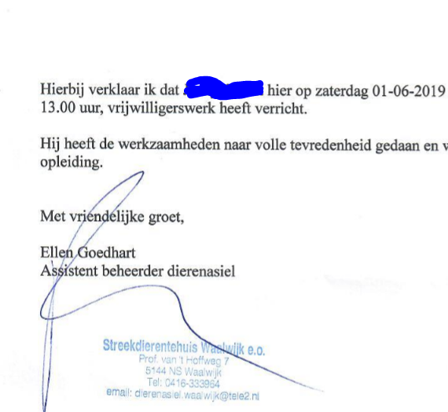

Warm - Tempo - Persoonlijks
Per leerling 2 slides
Eerste slide, wie is het? 20 sec, Het is ....
Tweede slide, kom dan snel naar voren
Felicitatie - diploma - handtekening
De laatste zal de eerste zijn...

Jordy de Wit
Knap hoor!
Quien es esto?
Guus Langelaar
QGIS Guru en Geo specialist
"Dag Saebu,
U heeft ons beloofd om gisteravond de bestanden toe te sturen zodat wij hiermee verder konden. ... en ik hebben hiervoor een dag vrijgehouden, maar hebben nog steeds geen bestanden ontvangen...
Wij ontvangen dit gaarg zo spoedig mogelijk!"
Naiche Smeets
Aards goed!
De eerste man aller tijden en heeft ook een beroemde broer
Adam Oubelkas
Goed gedaan.
ποιος είναι αυτός;
Vindt nooit beren op haar weg. - Gastvrouw Efteling.
Joska Craaijo
bu kim?
Webontwikkelaar clickbizz
Emre Aykin
Wer ist das?
Gaat game development studeren
Eet veel ijsjes
Bart Franssen
qui és això?
Stille waters hebben diepe gronden
Thomas van den Akker
Quis est hic?
Nick van Ballegooijen
кто это?
Was de kleinzoon van Mohammed en de zoon van Ali ibn Abu Talib.
Software ontwikkeling is mijn passie.
Hussein Al Shauwki
Geslaagd ondanks gezondheidsproblemen - Arduino/Raspberry PI - Automatisering thuisverlichting
kdo to je?
Programmeert al vanaf zijn 14de in Java
Ahmed Ahmed Ali Hassan
Ontwikkelaar bij clickbizz
Wie nu?
Vlijmen - bescheiden - hardwerkend - zachtaardig
Bart van de Wiel
Nog een aantal te gaan...
Elucidator -
Heeft al een baan als PHP developer bij salesupply, Wijchen
Jay Peters
Beetje opschieten jongens...
Naam met maar liefst 3 medeklinkers en 4 klinkers achter mekaar
Nourdin Rghioui
Serieus en een doorzetter, gewerkt bij Aliens.
Mag ik nu?
Indisch, stille kracht
Danny van Esch
Telaat komen is oke, maar dan alleen bij vrienden en familie afspraken.
Eentje uit de buurt van Maaskantje dan
Serieus, gedreven. st.oedenrode, elde college schijndel. Yellow Claw.
Rick van den Berg
Wanneer doen we dit weer ?
Ijsjes. Heeft gewerkt als Laptop Repair Engineer, Tablet repair engineer bij Comserve Network Netherlands BV
Jeroen Ligthart
Iemand uit Wijchen
Vriendengroepje met Jay en Wout
Jesse Zweers
Troika hier troika daar
Stilste uit het vriendengroepje met Bart en Joska
Danny van Veen
Kruikenzeiker
Jeffrey van Tilburg
Wat heb je gedaan?
Daan Plekenpol
Allergisch voor?
Ajaxfan - Vriendengroepje met Jay en Jesse
Wout van der Pol
Oranje shirt
Betekent stichting in het Turks?
Onur Temeli
Voorkomen achternaam
Naam is is afgeleid van het Latijnsecornu "hoorn", dus "de gehoornde".
Corné Eggebeen
Handig en ondernemend
Clickbizz ontwikkelaar, vriendengroepje met Onur, Hussein, Rayhan
Mohammed ali Çelık
JR
Jari Rengeling
Last but not least
Stoer - 10 voor zijn C# applicatie
Younès Majiti
We zijn er doorheen! Drankje! Veel succes met de carriere/studie! Het gaat jullie goed! Denk nog eens aan ons.


"Dag Saebu, U heeft ons beloofd om gisteravond de bestanden toe te sturen zodat wij hiermee verder konden. ... en ik hebben hiervoor een dag vrijgehouden, maar hebben nog steeds geen bestanden ontvangen... Wij ontvangen dit gaarg zo spoedig mogelijk!"
Aards goed!